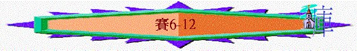

|
在 黑 暗 時 代 中 的 信 息（1-66） |
|||||
|
在變質國度中的斥責 |
在君亡噩訊中的異象 |
在無助孤身中的應許 |
在爭戰世界中的預言 |
在危難困境中的經歷 |
在暗淡前景中的安慰 |
|
1-5 |
6 |
7-12 |
13-35 |
36-39 |
40-66 |
『烏西雅登基的時候，年十六歲，在耶路撒冷作王五十二年．．．．行耶和華眼中看為正的事．．．．』代下26:3-4
『神幫助他攻擊非利士人．．．．亞拉伯人，並米烏尼人。亞們人給烏西雅進，他的名聲傳到埃及，因他甚是強盛』代下26:7-8
『他既強盛，就心高氣傲，以致行事邪僻，干犯耶和華他的
神，進耶和華的殿，要在香壇上燒香』代下26:16
『．．．．因為耶和華降災與他。烏西雅王長大痲瘋，直到死日，因此住在別的宮�堙A與耶和華的殿隔絕．．．．』代下26;20-21
∼背
景：烏西雅的王在世時是猶大國強盛的年代，但他在6章中的年代中駕崩了
∼啟發問題：一個曾經令猶大國強盛的王死了，之後的王會否繼續強盛呢？烏西雅曾因為干犯耶和華，而終生與聖殿隔絕，而他今死亡，會否同神管教有關？神是否厭棄他了？神也會否厭棄祂的百姓呢？王終生不能入聖殿，是否代表聖殿中沒有主的看顧？
∼真理應用：神仍坐在寶座中，人願承擔事奉的原因
1.得見主的異象(6:1-7)
A.更深認識主
a.祂是永活
「當烏西雅王崩的那年，我見主坐在高高的寶座上。他的衣裳垂下，遮滿聖殿。」6:1
∼烏西雅王雖死了，但以賽亞卻見特別的異象，在異象中他知道神仍是活著的
b.祂是至高
∼聖殿本身也有一定的高度，若神的衣裳垂下可遮滿聖殿，按比例猜想，以賽亞在異象中見到的主一定是在很高的位置，祂比強盛的烏西雅王更高
c.祂是何等榮耀與神聖
「其上有撒拉弗侍立，各有六個翅膀：用兩個翅膀遮臉，兩個翅膀遮腳，兩個翅膀飛翔；彼此呼喊說：聖哉！聖哉！聖哉！萬軍之耶和華；他的榮光充滿全地！」6:2-3
∼「撒拉弗」----在聖經中只有此處提出此名字，他們應是專負責侍立在神面前的天使，不只一個(是眾數的)
∼撒拉弗在神面前侍立的年日一定比任何人多，但他們見了主這麼多年，仍可不斷呼喊神的神聖，仍要用翅膀遮臉、遮腳，可見神實在是何等的榮耀與神聖，祂的榮光也充滿全地！
d.祂是看顧聖殿
∼人在聖殿中干犯了神，但神的衣裳仍垂下，仍保護及眷顧聖殿
e.祂是大君王，萬軍之耶和華
∼雖然烏西雅王死了，但在天上，神才是撒拉弗侍候的大君王，祂是天使之軍之主，祂才是萬王之耶和華
B.更深認識自己
a.自己的本相
「烏西雅其餘的事，自始至終都是亞摩斯的兒子先知以賽亞所記的。」代下26:22
「那時我說：「禍哉！我滅亡了！因為我是嘴唇不潔的人，又住在嘴唇不潔的民中，又因我眼見大君王萬軍之耶和華。」」賽6:5
∼以賽亞應不是在第6章才事奉神，他在烏西雅王在生時已事奉，其中一個事奉是記下烏西雅王的事情，他在記錄王生平時，應知王是有犯罪得罪神，有大痲瘋不潔淨的事蹟，以賽亞或許會覺自己相比之下也算聖潔
∼但在異象中他真正認識神是何等聖哉，反照自己卻充滿不潔
b.自處的環境
∼他看到神及神週圍的神聖與榮光，他才真正發現自己所住的地方，是何等不潔
c.自己的結局
∼有罪的人今站在神面前，他已知道自己必滅亡了！
C.更深認識救贖
a.主動的救恩
「有一撒拉弗飛到我跟前，手裡拿著紅炭，是用火剪從壇上取下來的，將炭沾我的口，說：「看哪，這炭沾了你的嘴，你的罪孽便除掉，你的罪惡就赦免了。」」6:6-7
∼神主動差撒拉弗來到以賽亞跟前，用壇上取來的炭(舊約聖殿的壇，多用作贖罪用途)，來潔淨以賽自以為最差的地方----嘴唇，是神主動除掉以賽亞的罪
b.無條件的救恩
∼神沒要求以賽亞作甚麼，才得赦免，是神無條件的救恩
c.奇妙的救恩
∼只是沾一沾他的嘴，他整個人的罪就奇妙地被除掉了
2.得聽主的聲音(6:8-13)
A.更深明白主的心腸
「我又聽見主的聲音說：「我可以差遣誰呢？誰肯為我們去呢？」我說：「我在這裡，請差遣我！」」6:8
∼誰肯為「我們」去呢？在希伯來的用語，有時形容神會用「我們」，是威嚴性的眾數，表達神的充滿，神的威榮
∼此處也可能暗示三位一體神的真理
∼神的心腸是誰肯為神而去，作成神的工作呢
∼以賽亞知道他活在的時代是充滿不潔的世代，神比以賽亞更理解，但神仍沒放棄這世代，仍要差派人在世代中作成祂的工作
B.更願承擔主的工作
∼以賽亞自願的說：「我在這�堙A請差遣我」，他甘心願意承擔神的工作
C.更清楚事奉的意義
a.事奉的對象----不一定是受教的
「他說：「你去告訴這百姓說：你們聽是要聽見，卻不明白；看是要看見，卻不曉得。要使這百姓心蒙脂油，耳朵發沉，眼睛昏迷；恐怕眼睛看見，耳朵聽見，心裡明白，回轉過來，便得醫治。」」6:9-10
∼神一早知道祂的百姓是心硬的，祂仍要以賽亞傳講，若繼續維持心硬的人，神也會對他們作審判，容許他們繼續硬心，去等待神的審判來
b.事奉的果效----未必是己想見的
「我就說：「主啊，這到幾時為止呢？」他說：直到城邑荒涼，無人居住，房屋空閒無人，地土極其荒涼。並且耶和華將人遷到遠方，在這境內撇下的地土很多。」6:11-12
∼這裡可能預表以色列人被擄之國，地上荒涼，剛硬的百姓在神管教下才曉得回轉
c.至終的結果----神仍是有恩典的
「境內剩下的人若還有十分之一，也必被吞滅，像栗樹、橡樹雖被砍伐，樹墩子卻仍存留。這聖潔的種類在國中也是如此。」6:13
∼神仍不滅盡選民，仍給他們存留餘種
三.在無助孤身中的應許(7-12)
「烏西雅的孫子、約坦的兒子、猶大王亞哈斯在位的時候，亞蘭王利汛和利瑪利的兒子、以色列王比加上來攻打耶路撒冷，卻不能攻取。有人告訴大衛家說：「亞蘭與以法蓮已經同盟。」王的心和百姓的心就都跳動，好像林中的樹被風吹動一樣。」7:1-2
＊年期：亞哈斯在位的時候
＊背景：亞蘭王利汛與以色列王比加上來攻擊南國
＊問題：南國的兄弟以色列與亞蘭同盟攻擊他們(可能因為當時北國與亞蘭聯盟，力邀南國加入，南國不肯，他們就揮軍南下)南國孤立無助，感到懼怕，想投靠亞述
＊特點：有不少『不懼怕』『倚靠』『神同在』『以馬內利』類似字眼。
＊真理重點：神同在可以不懼怕，真正救恩泉源是神，人要倚靠神。
1.對猶大的保証----針對他們的懼怕(7:3-9:7)
A.名字的提醒
「耶和華對以賽亞說：「你和你的兒子施亞雅述出去，到上池的水溝頭，在漂布地的大路上，去迎接亞哈斯，」7:3
∼「池的水溝頭」可能位於耶路撒冷以東的基訓泉，是主要水源，以亞哈斯王將要面對戰爭時，可能會視察如何保護水源
∼神要以賽亞和他兒子出去迎接亞哈斯一定有意思；以賽亞的名字是耶和華的救贖，而他兒子的名施亞雅述有「剩下的將要歸回」，神可能要亞哈斯知道在懼怕環境中，神才是拯救者，百姓要轉回祂身邊，就不怕敵人的攻擊
B.肯定的應許
「對他說：『你要謹慎安靜，不要因亞蘭王利汛和利瑪利的兒子這兩個冒煙的火把頭所發的烈怒害怕，也不要心裡膽怯。」7:4
∼神要他們不要懼怕，原因神有以下肯定的應許
a.聯盟所謀不得成就
「所以主耶和華如此說：這所謀的必立不住，也不得成就。」7:7
b.北面以色列快亡國
「原來亞蘭的首城是大馬色；大馬色的首領是利汛。六十五年之內，以法蓮必然破壞，不再成為國民。」7:8
∼亞哈斯在位的時間是主前736年，而北國亡國時間約是主前722年，果然北國在65年之內，沒有國家，心也不成為國民
C.奇妙的兆頭(7:10-25)
a.兆頭的由來
「「你向耶和華你的神求一個兆頭：或求顯在深處，或求顯在高處。」亞哈斯說：「我不求；我不試探耶和華。」以賽亞說：「大衛家啊，你們當聽！你們使人厭煩豈算小事，還要使我的神厭煩嗎？」7:11-13
∼神要亞哈斯更確信祂的應許，所以準許他可以求一個兆頭(sign)，意思是可以向神求一個特別明証的記號
∼但亞哈斯表面答他不求，不會試探神，但從以賽亞的回覆，可以表明他此反應令神厭煩
∼因神要他求，他不信神也不順服神去做，反用理由推唐，也可能代表他認為求也沒用，根本危機仍在
b.兆頭的內容
「因此，主自己要給你們一個兆頭，必有童女懷孕生子，給他起名叫以馬內利（就是神與我們同在的意思）。」7:14
「說：「必有童女懷孕生子；人要稱他的名為以馬內利。」（以馬內利繙出來就是「神與我們同在」。）」太1:23
∼神給亞哈斯及大衛家一個兆頭，是必有童女懷孕生子，給他起名叫以馬內利
∼有人說這以賽亞和第2個童女生的第二個兒子，但聖經強調童女懷孕，又強調起名叫以馬內利，在歷史中只有新約時代的童女馬利亞有此事發生，此兆頭不單是與亞哈斯講的，也是與大衛家說的，是指向耶穌基督，神的心意不單是與當時年代的人給他們應許，將來的以色列也給他們保證
∼而「棄惡擇善的時候」，猶太人認為一個兒童至十三歲時候，應對他們作的要負責任，因他應曉分辨是非，而「吃奶油與蜂蜜」可能是指他不是食開墾土地的地產，可能預表在貧窮環境中長大
c.兆頭的意義
「因為在這孩子還不曉得棄惡擇善之先，你所憎惡的那二王之地必致見棄。」7:16
(1)雖然兩國聯盟攻打猶大，但神仍與猶大同在
(2)猶大的敵人—二王必致見棄
d.兆頭的引申----神也有審判
∼神的同在可以使猶大的敵人見棄，但神的同在，也代表神要親自管教犯罪的猶大國，也引申下文審判的預告
(1)被亞述攻擊
「耶和華必使亞述王攻擊你的日子臨到你和你的百姓，並你的父家，自從以法蓮離開猶大以來，未曾有這樣的日子。」7:17
(2)地也變荒涼
「「那時，一個人要養活一隻母牛犢，兩隻母綿羊；因為出的奶多，他就得吃奶油，在境內所剩的人都要吃奶油與蜂蜜。」7:21-22
「所有用鋤刨挖的山地，你因怕荊棘和蒺藜，不敢上那裡去；只可成了放牛之處，為羊踐踏之地。」」7:25
∼因猶大肥沃，農田遭踐踏，最後成了只適合牧放地方，到處也只有荊棘和蒺藜
D.實在的見証(8:1-4)
a.大牌的記錄
「耶和華對我說：「你取一個大牌，拿人所用的筆（或作：人常用的字），寫上『瑪黑珥沙拉勒哈施罷斯』（就是擄掠速臨、搶奪快到的意思）。我要用誠實的見證人，祭司烏利亞和耶比利家的兒子撒迦利亞記錄這事。」」8:1-2
∼「瑪黑珥沙拉勒哈施罷斯」意思是擄掠速臨到，神要用大牌，因見證人寫下此字，表示此猶大所懼怕的二王二國也必會遭擄掠，所以他們不用怕二王的威嚇
b.兒子的印證
「我以賽亞與妻子（原文作女先知）同室；他懷孕生子，耶和華就對我說：「給他起名叫瑪黑珥沙拉勒哈施罷斯；因為在這小孩子不曉得叫父叫母之先，大馬色的財寶和撒瑪利亞的擄物必在亞述王面前搬了去。」」8:3-4
∼而以賽亞的兒子也出世了(可能在公元前735年)，他用此名為他的名字，而小孩子在二至三歲後可曉得叫而事實上在約公元前732年大馬色(即亞蘭之首都)和撒瑪利亞財寶被亞述擄去
E.全面的審判(8:5-8)
「耶和華又曉諭我說：「這百姓既厭棄西羅亞緩流的水，喜悅利汛和利瑪利的兒子；因此，主必使大河翻騰的水猛然沖來，就是亞述王和他所有的威勢，必漫過一切的水道，漲過兩岸；必沖入猶大，漲溢氾濫，直到頸項。以馬內利啊，他展開翅膀，遍滿你的地。」」8:5-8
∼「西羅亞」是耶京的水源，而「利汛和利瑪利的兒子」指亞蘭王及以色列王，或許猶大至終不接受神的幫助，反過來覺亞蘭和北國比神更好！神必用亞述審判他們，神同在帶來幫助，神的同在也可充滿猶大地，進行審判工作
F.先知的信念(8:9-22)
∼先知對列國的人宣告，他對神的肯定，任憑他們攻擊猶大，但他仍相信
a.神的同在
「任憑你們同謀，終歸無有；任憑你們言定，終不成立；因為神與我們同在。」8:10
b.神的可畏
「但要尊萬軍之耶和華為聖，以他為你們所當怕的，所當畏懼的。」8:13
c.人的仰望
「你要捲起律法書，在我門徒中間封住訓誨。我要等候那掩面不顧雅各家的耶和華；我也要仰望他．．．．．．有人對你們說：「當求問那些交鬼的和行巫術的，就是聲音綿蠻，言語微細的。」你們便回答說：「百姓不當求問自己的神嗎？豈可為活人求問死人呢？」人當以訓誨和法度為標準；他們所說的，若不與此相符，必不得見晨光。」8:16-20
「亞哈斯差遣使者去見亞述王提革拉毗列色，說：「我是你的僕人、你的兒子。現在亞蘭王和以色列王攻擊我，求你來救我脫離他們的手。」亞哈斯將耶和華殿裡和王宮府庫裡所有的金銀都送給亞述王為禮物。亞述王應允了他，就上去攻打大馬色，將城攻取，殺了利汛，把居民擄到吉珥。」王下16:7-9
∼猶大家始終不肯靠神的幫助，他們尋求亞述，尋求交鬼的，先知不發教訓，要等候先知神所說的預言應驗
∼而人不仰望神的話，不以神的話為標準，反尋求律法不好，尋求的交鬼邪術，神至會使他們所望見艱難與黑暗
G.真神的熱心
∼回應之前8:22，似乎人在地上所仰望的，令他們落在黑暗中，但神使以色列人受過痛苦後，必向他們發熱心，使他們重見真光，使他們得真正的平安
a.大光的來臨
「但那受過痛苦的必不再見幽暗。從前神使西布倫地和拿弗他利地被藐視，末後卻使這沿海的路，約但河外，外邦人的加利利地得著榮耀。在黑暗中行走的百姓看見了大光；住在死蔭之地的人有光照耀他們。」9:1-2
「耶穌聽見約翰下了監，就退到加利利去；後又離開拿撒勒，往迦百農去，就住在那裡。那地方靠海，在西布倫和拿弗他利的邊界上。這是要應驗先知以賽亞的話，說：西布倫地，拿弗他利地，就是沿海的路，約但河外，外邦人的加利利地，那坐在黑暗裡的百姓看見了大光；坐在死蔭之地的人有光發現照著他們。」太4:12-16
∼西北倫與拿弗他利是加利利地，昔日北國的地方，雖然神會管他們受痛苦，但有一日，他們在黑暗中卻得希望
∼而此段更預表耶穌來到加利利地方，如真光照在黑暗世代中
b.嬰孩的降生
「因有一嬰孩為我們而生；有一子賜給我們。政權必擔在他的肩頭上；他名稱為「奇妙策士、全能的神、永在的父、
∼之前，亞哈斯王與百姓因二王的攻擊而感懼怕，神應許以馬內利臨在他們中間，此段經文更解釋以馬內利----那嬰孩降生帶來使人不懼怕而感平安安定的局面
∼耶穌將臨到世間，祂必在大衛的寶座上治理祂的國，國不再感懼怕而得穩固，神的熱心必成就此事
∼用「奇妙策士」可能回應他們尋求占卜或國家的策士，但是終不能幫助他們，直正的策士是我的救主
2.對仇敵的擊打----針對以法蓮攻擊猶大(9:8-10:4)
∼前面針對他們的懼怕，此段針對他們的敵人----以法蓮
A.擊打其驕傲(9:8-12)----雖然如此，耶和華的怒氣還未轉消
「主使一言入於雅各家，落於以色列家。這眾百姓，就是以法蓮和撒瑪利亞的居民，都要知道；他們憑驕傲自大的心說：磚牆塌了，我們卻要鑿石頭建築；桑樹砍了，我們卻要換香柏樹。因此，耶和華要高舉利汛的敵人來攻擊以色列，並要激動以色列的仇敵。東有亞蘭人，西有非利士人；他們張口要吞吃以色列。雖然如此，耶和華的怒氣還未轉消；他的手仍伸不縮。」9:8-12
∼利汛的敵人應指亞述，也有亞蘭、非利士人攻擊北國
B.擊打其不悔(9:13-17)
----雖然如此，耶和華的怒氣還未轉消
「這百姓還沒有歸向擊打他們的主，也沒有尋求萬軍之耶和華。因此，耶和華一日之間必從以色列中剪除頭與尾，棕枝與蘆葦，長老和尊貴人就是頭，以謊言教人的先知就是尾。因為，引導這百姓的使他們走錯了路；被引導的都必敗亡。所以，主必不喜悅他們的少年人，也不憐恤他們的孤兒寡婦；因為，各人是褻瀆的，是行惡的，並且各人的口都說愚妄的話。雖然如此，耶和華的怒氣還未轉消；他的手仍伸不縮。」9:13-17
∼棕枝指領袖，蘆葦指平民
C.擊打其邪惡(9:18-21)
----雖然如此，耶和華的怒氣還未轉消
「邪惡像火焚燒，燒滅荊棘和蒺藜，在稠密的樹林中著起來，就成為煙柱，旋轉上騰。因萬軍之耶和華的烈怒，地都燒遍．．．．．．又一同攻擊猶大。雖然如此，耶和華的怒氣還未轉消；他的手仍伸不縮。」9:18-21
D.擊打其不義(10:1-4)
----雖然如此，耶和華的怒氣還未轉消
「禍哉！那些設立不義之律例的和記錄奸詐之判語的，為要屈枉窮乏人，奪去我民中困苦人的理，以寡婦當作擄物，以孤兒當作掠物。」10:1-2
「他們只得屈身在被擄的人以下，仆倒在被殺的人以下。雖然如此，耶和華的怒氣還未轉消；他的手仍伸不縮。」10:4
3.對所靠的消除(10:5-34)----針對他們想投靠亞述
∼南國對二王的攻擊，曾想投靠亞述，不靠神，神卻要除滅南國的倚靠
A.本是神管教人的工具(10:5-6)
「亞述是我怒氣的棍，手中拿我惱恨的杖。我要打發他攻擊褻瀆的國民，吩咐他攻擊我所惱怒的百姓，搶財為擄物，奪貨為掠物，將他們踐踏，像街上的泥土一樣。」10:5-6
B.反成神所刑罰的對象(10:7-34)
a.神刑罰亞述的驕傲
「他說：我的臣僕豈不都是王嗎？迦勒挪豈不像迦基米施嗎？哈馬豈不像亞珥拔嗎？撒瑪利亞豈不像大馬色嗎？我手已經搆到有偶像的國；這些國雕刻的偶像過於耶路撒冷和撒瑪利亞的偶像。」10:8-10
「主在錫安山和耶路撒冷成就他一切工作的時候，主說：「我必罰亞述王自大的心和他高傲眼目的榮耀。」因為他說：我所成就的事是靠我手的能力和我的智慧，我本有聰明。我挪移列國的地界，搶奪他們所積蓄的財寶；並且我像勇士，使坐寶座的降為卑。」10:12-13
「斧豈可向用斧砍木的自誇呢？鋸豈可向用鋸的自大呢？好比棍掄起那舉棍的，好比杖舉起那非木的人。」10:15
∼迦基米施、迦勒挪、哈馬、亞珥拔、大馬色曾是亞述所征服的城巿，亞述當他們為僕人，也自誇是用自己能力所作成的，神卻要刑罰亞述的驕傲
b.神才是選民的倚靠
「到那日，以色列所剩下的和雅各家所逃脫的，不再倚靠那擊打他們的，卻要誠實倚靠耶和華以色列的聖者。所剩下的，就是雅各家所剩下的，必歸回全能的神。」10:20-21
c.神刑罰亞述的攻擊
「因為還有一點點時候，向你們發的忿恨就要完畢，我的怒氣要向他發作，使他滅亡。萬軍之耶和華要興起鞭來攻擊他，好像在俄立磐石那裡殺戮米甸人一樣。耶和華的杖要向海伸出，把杖舉起，像在埃及一樣。」10:25-26
∼「俄立………米甸人」是講述基甸殺敗米甸人的事，到那日神也要如此攻擊亞述
d.神卻要保護以色列
「亞述王來到亞葉，經過米磯崙，在密抹安放輜重。他們過了隘口，在迦巴住宿。拉瑪人戰兢；掃羅的基比亞人逃跑。」10:28-29
「看哪，主萬軍之耶和華以驚嚇削去樹枝；長高的必被砍下，高大的必被伐倒。稠密的樹林，他要用鐵器砍下；利巴嫩的樹木必被大能者伐倒。」10:33-34
∼「安放輜重」----軍備之類物件，「來到亞葉……逃跑」可能形容亞述大軍南下的路線，可能指主前701年，西拿基立大軍南下的事情，最終他們大敗而退，神卻保護了以色列
4.對選民的復興(11-12)
----針對南北的分裂及被審判
∼北國攻擊南國，表示兄弟之不和，但至終神會使南北復會，帶來真正的復興
A.智君的誕生(11:1-5)
「從耶西的本（原文作）必發一條；從他根生的枝子必結果實。耶和華的靈必住在他身上，就是使他有智慧和聰明的靈，謀略和能力的靈，知識和敬畏耶和華的靈。他必以敬畏耶和華為樂；行審判不憑眼見，斷是非也不憑耳聞；卻要以公義審判貧窮人，以正直判斷世上的謙卑人，以口中的杖擊打世界，以嘴裡的氣殺戮惡人。公義必當他的腰帶；信實必當他脅下的帶子。」11:1-5
∼「耶西」的本----指耶穌基督，祂是大衛的後裔，大衛的父親是耶西
∼神的靈降在祂身上，使祂有能力，有智慧審判管轄世界
B.人畜的和睦(11:6-9)
「豺狼必與綿羊羔同居，豹子與山羊羔同臥；少壯獅子與牛犢並肥畜同群；小孩子要牽引他們。」11:6
「在我聖山的遍處，這一切都不傷人，不害物；因為認識耶和華的知識要充滿遍地，好像水充滿洋海一般。我聖山的遍處，這一切都不傷人，不害物；因為認識耶和華的知識要充滿遍地，好像水充滿洋海一般。」11:9
∼人畜的和睦至今仍未發生，所以這情景應指向將來千禧年國度太平和睦現象
C.外邦的投靠(11:10)
「到那日，耶西的根立作萬民的大旗；外邦人必尋求他，他安息之所大有榮耀。」11:10
D.選民的被救(11:11-12)
「當那日，主必二次伸手救回自己百姓中所餘剩的，就是在亞述、埃及、巴忒羅、古實、以攔、示拿、哈馬，並眾海島所剩下的。他必向列國豎立大旗，招回以色列被趕散的人，又從地的四方聚集分散的猶大人。」11:11-12
∼「巴忒羅」即埃及，「古實」現今埃及及埃塞俄比亞，「以攔」即示拿地(巴比倫)，「哈馬」即北敍利亞，「眾海島」可能指地中海與愛琴海的諸島嶼
在這些地方的以色列人必回歸神的國
E.南北的復合(11:13)
「以法蓮的嫉妒就必消散；擾害猶大的必被剪除。以法蓮必不嫉妒猶大，猶大也不擾害以法蓮。」11:13
∼南北國的支派也不會有嫉妒，彼此復和
F.選民的歸回(11:14-16)
「耶和華必使埃及海汊枯乾，掄手用暴熱的風使大河分為七條，令人過去不至濕腳。為主餘剩的百姓，就是從亞述剩下回來的，必有一條大道，如當日以色列從埃及地上來一樣。」11:15-16
G.末後的歡呼(12:1-6)
a.事實：神的怒氣已轉消
「到那日，你必說：耶和華啊，我要稱謝你！因為你雖然向我發怒，你的怒氣卻已轉消；你又安慰了我。」12:1
b.體會：救恩的泉源是耶和華
「看哪！神是我的拯救；我要倚靠他，並不懼怕。因為主耶和華是我的力量，是我的詩歌，他也成了我的拯救。所以，你們必從救恩的泉源歡然取水。」12:2-3
c.肯定：以色列的聖者乃為至大
「在那日，你們要說：當稱謝耶和華，求告他的名；將他所行的傳揚在萬民中，提說他的名已被尊崇。你們要向耶和華唱歌，因他所行的甚是美好；但願這事普傳天下。錫安的居民哪，當揚聲歡呼，因為在你們中間的以色列聖者乃為至大。」12:4-6